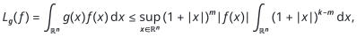

Blogs. Distributions and Tempered Distributions [b26nov06]
Let denote the space of functions from to that is differentiable for all degrees, and let be the functions that in with compact support.
Definition. Schwartz Class (Schwartz Space)
Definition. Schwartz Class (Schwartz Space)
The Schwartz class collects the functions that decrease rapidly (faster than any polynomial.) First define the Schwartz semi-norm on that
And then the Schwarz Class is the set that have finite supremum over all multi-indices, that is
An important property of Schwartz class is that the fourier transform of a function in Schwartz class is still in Schwartz class.
Definition. Convergence in the Spaces
Definition. Convergence in the Spaces
First we have the inclusion of the spaces
We say that
![f_k -> f in scr(C)^infinity <==> & f_k, f in scr(C)^infinity "and" lim_(k -> infinity) sup_(abs(x) <= N) abs(partial^alpha (f_k - f) (x)) = 0\
& forall alpha "multi-indices and all" N = 1, 2, dots.\
f_k -> f in scr(S)^infinity <==> & f_k, f in scr(S)^infinity "and" lim_(k -> infinity) sup_(x in RR^n) abs(x^alpha partial^beta (f_k - f) (x)) = 0\
& forall alpha, beta "multi-indices."\
f_k -> f in scr(C)_0^infinity <==> & f_k, f in scr(C)_0^infinity, supp(f_k) subset.eq B quad forall k, B "compact"\
& "and" lim_(k -> infinity) norm(partial^alpha (f_k - f))_(L^infinity) = 0 quad forall alpha "multi-indices".](../assets/eq-8713ab91d29ce34f.svg)
Definition. Distributions
Definition. Distributions
We define the dual space of the spaces with special names,
- distributions:
- tempered distributions:
- distributions with compact support:
And we equip the weak topology on these spaces.
Example. Tempered Distribution
Example. Tempered Distribution
Every function that satisfies for some real number is a tempered distribution. To see this,

where and the supremum is bounded by a sum of the semi-norms in the Schwartz space.
The reason we need to consider distributions instead otherfunctions.
Reference
Reference
Grafakos, Loukas. Fundamentals of Fourier Analysis. Graduate Texts in Mathematics, Springer Cham, 2024. https://doi.org/10.1007/978-3-031-56500-7.
Grafakos, L. (2014). Classical Fourier Analysis (3rd ed.). Springer New York, NY. https://doi.org/10.1007/978-1-4939-1194-3